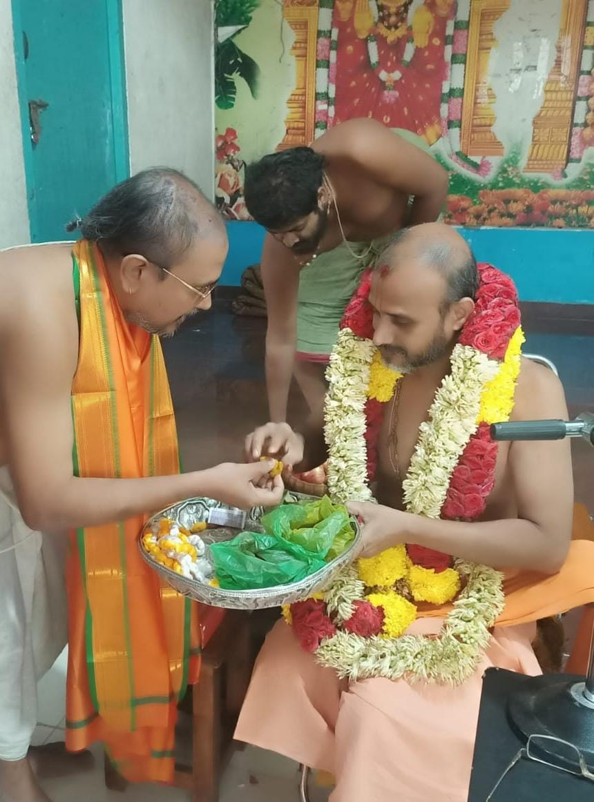

Adhyatma Vidya Pratishthanam
Kadapa • Vedantic Knowledge • Satsang & Events

To Promote Madhwa culture and develop the Madhwa community in the field of Social, Educational, Health, Economical, and others also to inculcate about the Madhwa Community and Preaching of His Holiness Sri 1008 Satyatma Teertharu; the present pontiff of Uttaradi Mutt.